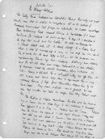

Biography |
Quotes |
Papers |
Misc.

Papers
The Frank O'Connor papers include all the literary manuscripts and related materials (excluding printed books) left to Harriet Sheehy by Michael O'Donovan The papers occupy 23 manuscript boxes, 10 linear feet, and include holograph journals and notebooks, corrected and uncorrected typescripts, carbon copies, tearsheets, galleys, and occasional correspondence related to the publication of Frank O'Connor's literary works. The major part of the collection is the short story material, O'Connor's chief genre, but this is supplemented by non-fiction including literary criticism, lecture notes, scripts of radio broadcasts, autobiographical material, with reminiscences of his work with the Abbey Theatre, and some sixty-three articles for newspapers and magazines.
O'Connor's personal and professional relationships with William Butler Yeats, George Russell ("A.E."), and other noted Irish authors and playwrights are delineated in the private holograph journals as well as in papers prepared for publication. The short story typescripts, many of which have extensive manuscript revisions and additions, offer opportunities to study O'Connor's artistic methodology, while the lecture notes and critical articles reveal his insights into the methodologies and major themes of other literary figures. The non-fiction also reflects O'Connor's devotion to Ireland and his efforts to preserve its monuments, language, and culture.
The papers are arranged as they were received from the bookdealer, by genre, and they are all in acceptable condition. Care should be exercised, of course, in handling papers that are becoming brittle. None of the material is restricted from viewing, although some is too fragile for photocopying.
The Frank O'Connor papers provide a substantial body of manuscripts to complement the books and manuscripts in the Rare Book Department's previously acquired Irish Collection
Top